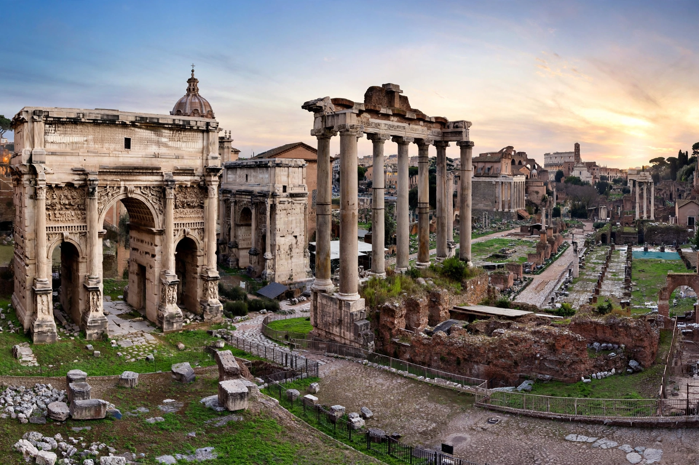

| Location | Central Rome, Italy |
|---|---|
| Built | 7th century BC – 312 AD |
| Type | Forum, civic centre |
The Roman Forum, known in Latin as Forum Romanum, is a rectangular forum surrounded by the ruins of several important ancient government buildings at the centre of Rome. For centuries it was the centre of daily life: elections, triumphs, trials, speeches, commerce, and markets.
Originally a marshy burial ground drained by the Cloaca Maxima, the Forum developed from the 7th century BC. Key monuments include the Curia (Senate house), Temple of Saturn, Arch of Titus, Arch of Septimius Severus, Basilica Julia and Basilica Aemilia, the Rostra, and the Temple of Antoninus and Faustina. Julius Caesar and Augustus reorganised and embellished it.
After Rome's fall the Forum decayed into the Campo Vaccino (cow pasture). Systematic excavation began in the 19th–20th centuries and continues today as part of the Colosseum archaeological park.
See also Roman satire for literature of the period.